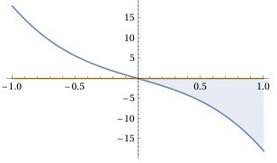

Aufgabe 52 Bestimmen Sie die Lösungsmenge der Ungleichung für x ∈ ℝ: -9x³ - 9x < 0 -9x(x² + 1) < 0 |:-9 aus < wird > x(x² + 1) > 0 ist dann der Fall, wenn x² + 1 > 0 und x > 0 = D1 x² + 1 > 0 und gilt für alle x ∈ ℝ = D2 L1 = D1 ∩ D2 = x ∈ ℝ ∩ x > 0 = x > 0 oder wenn x² + 1 < 0 x < 0 = D3 x² + 1 < 0 gilt für kein x, deswegen D4 = Φ L2 = D3 ∩ D4 = x < 0 ∩ Φ = Φ L = L1 ∪ L2 = x > 0 ∪ Φ L = x > 0 In Worten: Für x > 0 ist -9x³ - 9x < 0. andere Überlegung Nullstellen von -9x(x² + 1) = 0: -9x = 0 |:-9 x1 = 0 x² + 1 = 0 |-1 x² = - 1 --> keine weiteren Nullstellen Die Funktionswerte von x > 0 liegen unterhalb der x-Achse, erfüllen also die Bedingung < 0. L = x > 0
